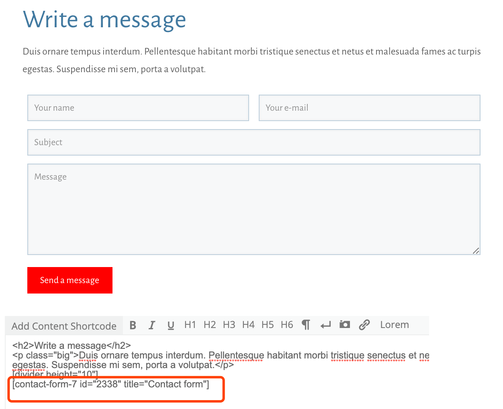
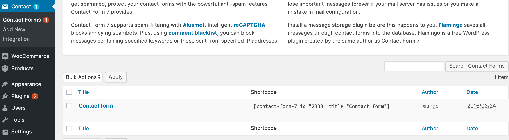
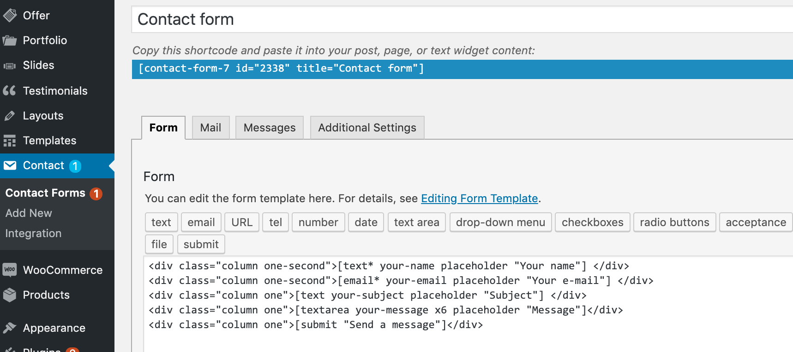
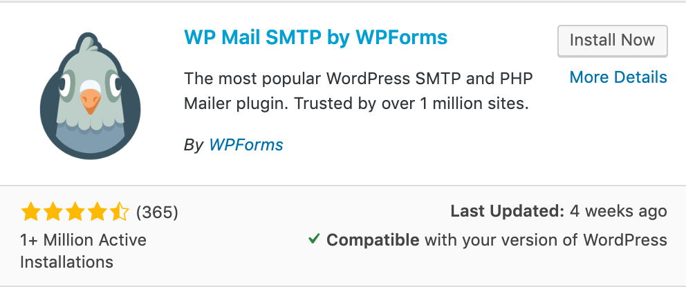

CF7插件

CF7插件用来做“联系我们”留言板。 访客填写信息留言后，网站会把这些信息发送到指定邮箱。CF7是免费的。
原理：
CF7 + 插件 + 第三方SMTP
表单信息 -> CF7插件 -> 主机具有发邮件功能 或者 [SMPT插件 + 第三方SMTP服务器] -> 管理员邮箱
这个插件管理位置在：联系(Contact)
上图所示的留言板引用的是：[contact-form-7 id="2338" title="Contact form"]对应的位置是：
Contact（联系） > Contact Forms下面Contact form


Step 1> 安装SMTP插件
借助第三方邮箱服务器发邮件需要一个SMTP插件，比如：

Step 2> 通过第三方邮件平台获取授权码
比如QQ邮箱的设置里，通过发短信的方式获取IMAP/SMTP授权码
Step 3> 设置WP Mail SMTP
Settings > WP Mail SMTP
- From Email: 填写自己的Email ==> 示例：123456789@qq.com
- From Name: 对方看到的邮箱名 ==> 示例：123456789@163.com
- SMTP Host: SMTP服务器地址 ==> QQ的是 smtp.qq.com
- Encryption: 可以勾选SSL
- SMTP Port: 如果勾选了SSL，则此处对应填写，QQ和163的是465
- Aoto TLS: 不必要选中
- Authentication: ON 打开
- SMTP Username: SMTP用户名，和上面From Eamil是一样的，即自己的邮箱
- SMTP Password: SMTP密码 注：这个密码不是网页登录密码，而是腾讯/网易给的IMAP/SMTP授权码
Step 4> 设置CF7表单的Mail
Contact > 在这些表单列表中找到要编辑的表单 > Edit > Mail

- To: 收件人，示例：123456789@qq.com
- From: 收件人，示例：[your-name]123456789@qq.com